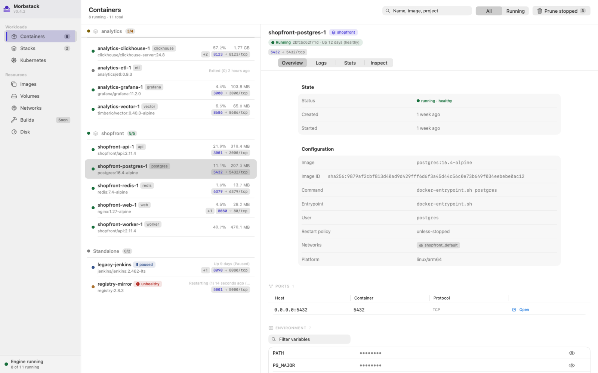
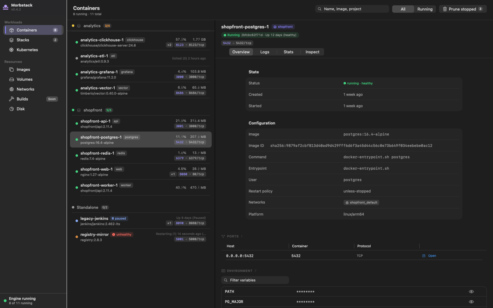
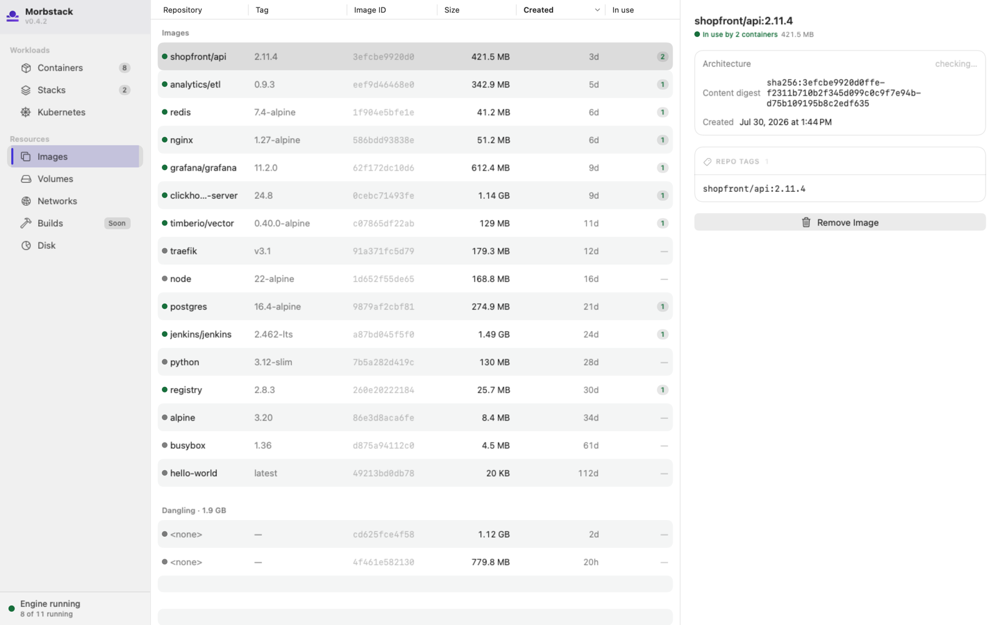
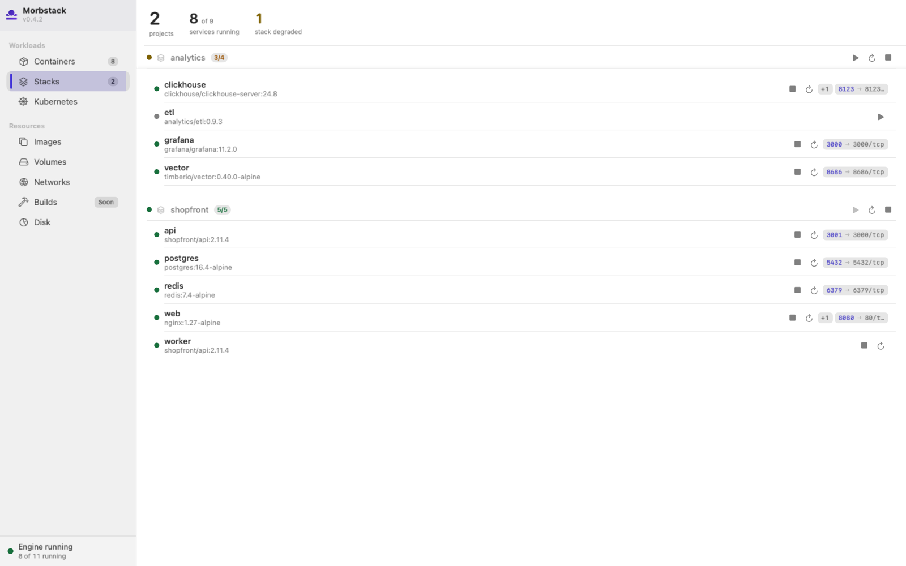
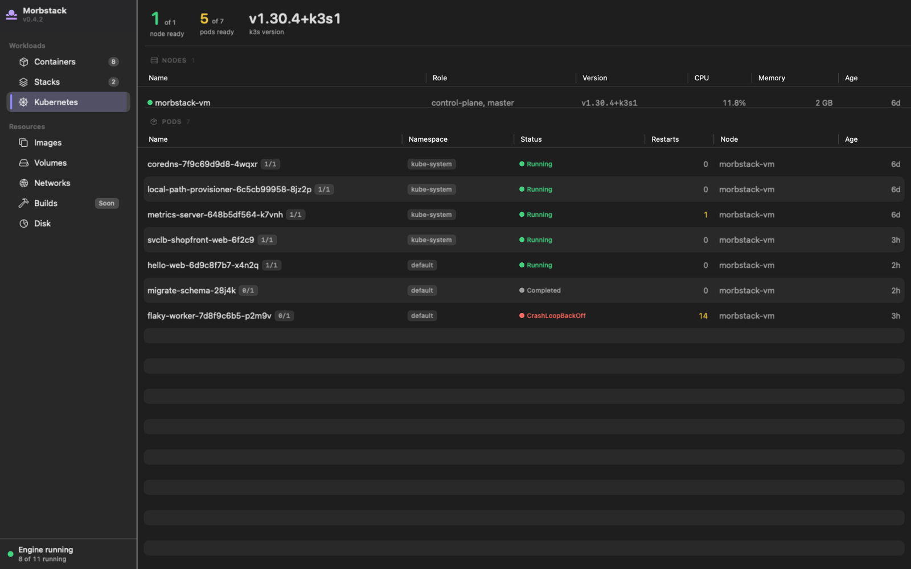
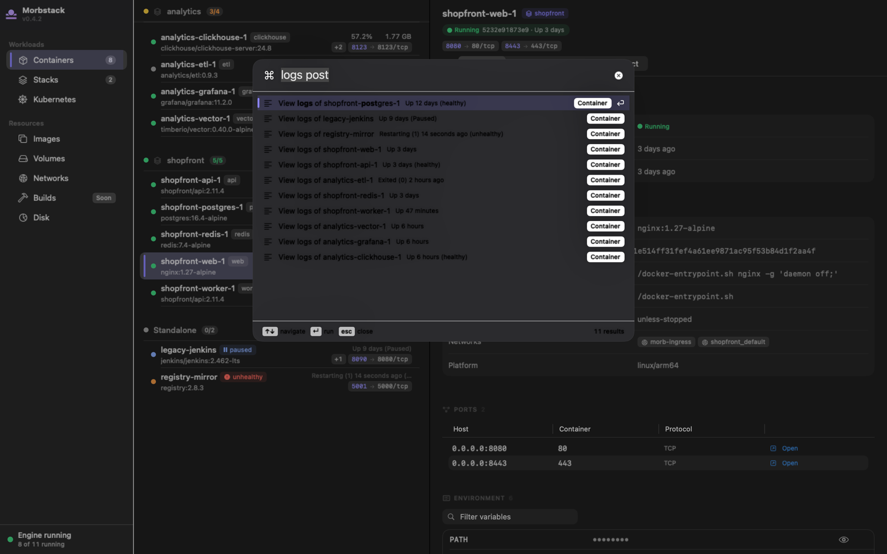

The Docker you wish Docker shipped.
Morbstack runs unmodified upstream dockerd/containerd inside one shared, lightweight Linux VM on Apple's Virtualization.framework — free forever, Apache-2.0, no account, no telemetry.


Six claims, each one checkable.
No embellishment — every line below is true today and traceable to this repository's own license file, source tree, or docs.
Free forever
No tier, no seat limit, no company-size threshold. Every feature that runs on your machine costs nothing, for anyone.
Apache-2.0
The whole project — daemon, CLI, app, guest init — is Apache-2.0. See LICENSE and NOTICE in the repository.
No account
Nothing to sign in to. Nothing phones home to check a license. There is no account system anywhere in this codebase.
No telemetry, no license nags
No analytics, no crash reporting service, no "upgrade to Pro" interstitials. What you run is what's in the repo.
Unmodified upstream Docker Engine
A static, unpatched Docker Engine build runs inside the guest — the same dockerd/containerd you'd get anywhere else, not a reimplementation.
Native SwiftUI, zero web views
No Electron, no Chromium, no embedded browser anywhere in the app. SwiftUI and Foundation, the same frameworks a Mac-native app is supposed to use.
Measured numbers, and separately, targets.
Every number below is labelled with the file it came from. The two groups are not the same kind of claim — conflating them is exactly the kind of dishonesty this project exists to avoid.
MeasuredReal, timed runs against a live build — not simulated, not estimated. See docs/roadmap.md and docs/parity.md.
docker run hello-world completing — socket-activated, no pre-warmed VM state.morb stop takes 10.7s; morb start brings a --restart unless-stopped container back running, no manual restart.These are commitments, not results. docs/roadmap.md commits Morbstack to publishing accurate, current status against every one of these via morb bench from milestone M2 onward.
| Target | Goal |
|---|---|
| Cold boot | ≤ 2.0 s |
| Resume (from suspend-to-zero) | ≤ 500 ms |
| Idle host CPU | ≤ 0.1 % |
| Idle wakeups | < 20 / s |
Host RSS (morbstackd, idle) | ≤ 120 MB |
| Guest memory floor | ≤ 256 MB |
git status on a bind-mounted Linux tree, vs. native | ≤ 2x native |
npm install on a bind-mounted project, vs. native | ≤ 1.5x native |
Source: docs/roadmap.md, "Public performance target table".
Pre-release. Here's exactly where it stands.
- No
buildxshipped out of the box. The guest's BuildKit is fully functional, but nodocker-buildxclient plugin is installed by default yet. - No
host.docker.internal/gateway.docker.internal. Neither resolves inside a container today — not degraded, completely absent. - No zero-config Docker socket discovery. You must set
DOCKER_HOSTor rundocker context createby hand; nothing auto-registers yet. - No inotify across bind mounts. A host-side edit is correct the instant you read it, but hot-reload watchers (
nodemon,vite,webpack --watch) see no event. Polling watchers (--legacy-watch) work. - The
/tmpvs./private/tmpbind-mount footgun. A bind mount through an unresolved/tmp/...path silently mounts an empty directory instead of your file — no error, no warning.
- Core CLI surface —
ps/images/pull/run/exec/logs/inspect/cp/stats/events— byte-for-byte the shape real Docker produces. - Multi-service Compose stacks with healthchecks, named volumes, and custom networks.
- Published ports, outbound container networking, and disk persistence across
morb stop/morb start. - amd64 images via Rosetta, verified bit-identical against native output.
- A local Kubernetes cluster on the same engine, off by default.
What it looks like.
Rendered from the real shipping SwiftUI views via the app's own screenshot harness, not mockups. Some fixture data (container names, version strings) is placeholder test data, not a claim about the current release.

docker images would show.

morb k8s single-node cluster, wired to the same engine as everything else.